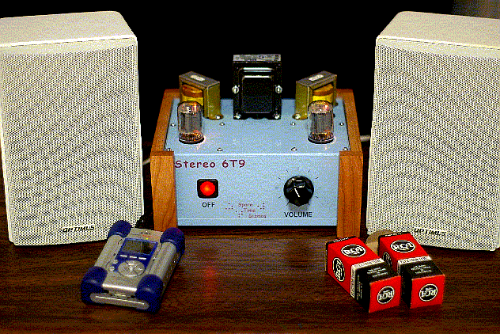
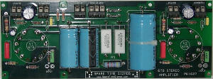
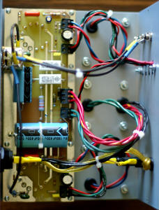
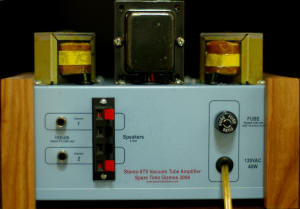

Stereo 6T9
Stereo 6T9


|
|
Read all about the Stereo 6T9 Project in the August 2004 issue of Nuts & Volts Magazine!!
In a thousand digital projects, I've never found anything quite the same as building vacuum tube amplifiers. There are no ICs, no microprocessors and, best of all, absolutely no software, yet there's more magic in hearing it work than any other project!
 You remember vacuum tubes, don't you? Those glass things that get hot? Well, the Stereo 6T9 is a basic vacuum tube audio amplifier. It has pretty much everything that it needs to sound good, including quality output transformers and just a little bit of negative feedback, but none of the audiophile extras that run the price up to astronomical levels. It makes an excellent little amplifier for your PC or a CD/MP3 player and it's fun to build, too. You can buy a printed circuit board from Spare Time Gizmos that takes care of mounting nearly all of the components, including the tubes. The PC board gives a clean under chassis layout that eliminates most of the tedious point-to-point wiring usually found in an amplifier of this kind.
 The Stereo 6T9 was featured on the cover of the August 2004 edition of Nuts & Volts Magazine and, if you don't already have it, we recommend that you visit the nice people at Nuts & Volts and order a reprint of that issue. You can download a complete schematic of the Stereo 6T9 and the PC board layout files from the Spare Time Gizmos Downloads page, but that's all the additional information we can supply. If you want an analysis of how the circuit works, detailed construction information, a description of how to avoid ground loops (and believe me, you want to avoid them!), troubleshooting tips, and (for the younger audience members) a description of just what a vacuum tube is and how it works, you'll have to buy the Nuts & Volts article.Errata
 Capacitors C102/C202 are 0.01 uF 400V "Orange Drop" components from Antique Electronic Supply (AES). Unfortunately, the AES part number given, C-PD022-400, is for a 0.022uF capacitor -- the correct part number for the 0.01uF component is C-PD-01-400. If you already bought the 0.022uF capacitor then there's no need to return it -- it'll work just fine in this circuit, however you may have to "form" the leads a bit to get it to fit on the PC board.In the power supply schematic the 47K 2W bleeder resistor is marked "R1" but it's actually R3 in the parts list. Spare Time Gizmos is currently shipping Revision D of the 6T9 printed circuit board. This differs from the one described in Nuts & Volts in that an additional 47uF 450V filter capacitor, C3, has been added in parallel with C1. This will any reduce residual hum in the power supply to inaudible levels. C3 is shown in the current schematics on our Downloads page, but not in the Nuts & Volts article. These are all the currently known errors in the Nuts & Volts
article. If any more mistakes are discovered, we'll describe them here. Hints
 You can download a full sized drilling guide for the top, front and back of the metal enclosure. Just print it out on adhesive label stock, glue it to your box, and drill where shown. If you want to add the front and rear panel decals shown, you can download the full size artwork and print it out on transparent, adhesive, film. After you've printed the artwork, cut it carefully along the outline and glue it to the front and rear panels, being careful to align the holes in the artwork with the actual holes in the chassis.WarningUnlike battery operated transistor or IC circuits, vacuum tubes can be dangerous. Not only is this project powered from the AC power line, but it contains voltages as high as 500V. Voltages this high are lethal! Remember that high voltage capacitors can store dangerous voltages for hours after the power is removed. Finally, power tubes such as the 6T9 get very hot in normal usage and you can easily get burned by touching the glass envelope! Downloads
PurchaseCurrently the 6T9 PC boards and other parts are sold out.
|
Visit these Spare Time Gizmos
|